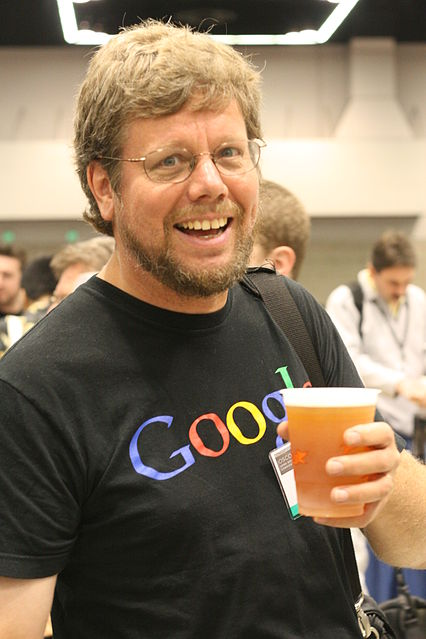

Первый релиз Python состоялся в 1991 году, а его создателем был
Гвидо ван Россум и этот язык был создан, чтобы заменить
собой язык ABC, в работе над которым принимал участие будущий автор «Пайтона».
Язык назвали в честь телешоу на BBC под названием «Летающий цирк Монти Пайтона», а вовсе не потому, что создатель любит
змей.
Стоит отметить, что Пайтон изначально позиционировался как "язык для каждого", поэтому большой упор делался на
читаемость кода и лаконичность синтаксиса. В версии 2.0 появились знаменитые "списковые включения" ("list
comprehensions"), позаимствованные из языков SETL и Haskell.
